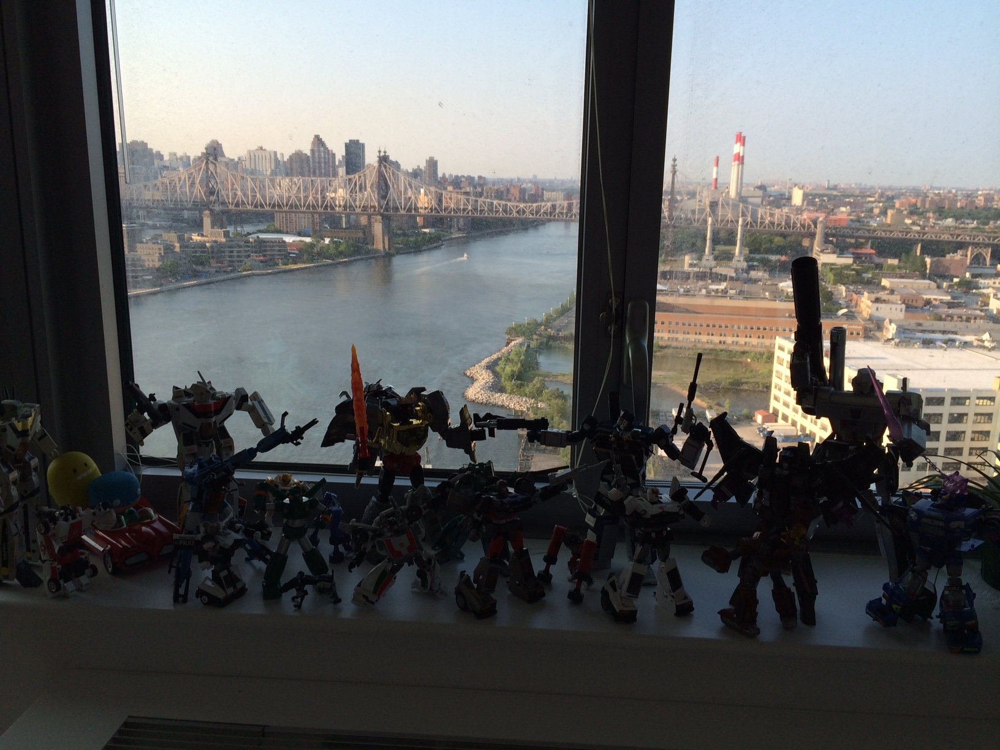
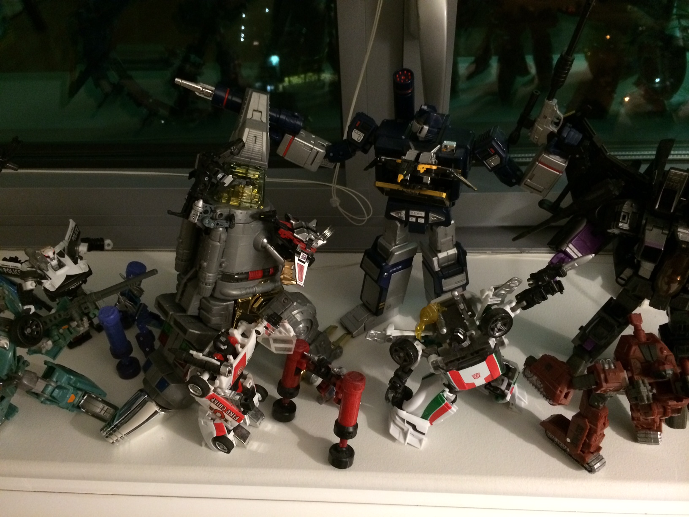

I love robots. My husband, Paul, loves robots. We love robots!!!
I remember when I was 6 years old, I asked my mom to buy me a robot. When she took the robot to the counter to pay, the owner of the toy store told us that I should play with 'dolls' instead of robots because I am a girl. He was almost refusing to sell the robot to us.
My mom, being the coolest mom ever, and also a very hot tempered mom, argued with the toy store owner and told him off that I don't have to only play with dolls just because I'm a girl. As they were arguing, I was standing there crying, thinking I did something wrong for wanting a robot.
Ever since that day, I thought I was a weird girl for liking robots instead of Barbie dolls. And my love for robots sort of faded away. I found other interests and hobbies.. Until that DAY......... When I met Paul...
I met Paul and my love for robots just woke up. It was almost like Robots hybernated in me for 20 something years and they just woke up.
We love pretty much all kinds of robots, but we love collecting "Gundams" and "Transformers". As for Gundams, we love buying Gunpla (Gundam Plastic Model) and building them together. As for Transformers, we love just transforming them.
 